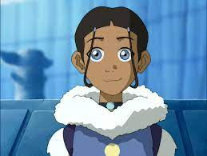

Katara
Katara is a waterbending master, born in the Southern Water Tribe to Chief Hakoda and his wife Kya. During her childhood, she was the only waterbender living in the Southern Water Tribe. After losing her mother in a Fire Nation raid and her father left to battle against the Fire Nation in the Hundred Year War, she was raised by her paternal grandmother Kanna alongside her older brother Sokka. As a teenager, Katara and her brother discovered the young Air Nomad Avatar, Aang, who had been frozen in an iceberg with his bison, Appa, for one hundred years. In need of a waterbending master, the siblings and Aang left the South Pole on a journey toward the Northern Water Tribe.